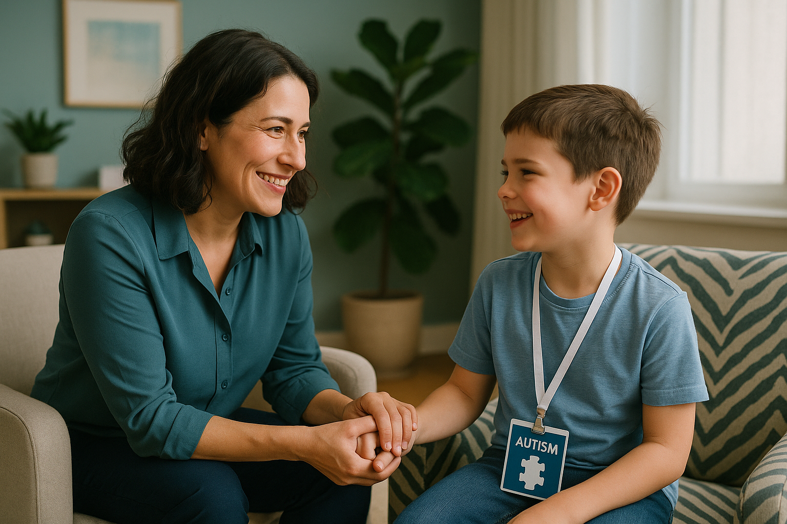

Olá! Sou Renata Andrade Lima Silva,
psicóloga com atuação em São Bernardo do Campo e atendimento online para toda a região do Brasil. Minha especialização abrange Neuropsicologia, Análise do Comportamento Aplicada e Psicoterapia (individual, de casal e familiar), com pós-graduações pela PUC Goiás e Universidade São Judas Tadeu.
Saiba maisConsultas
Terapia online
A consulta psicológica online é uma modalidade de atendimento autorizado pelo conselho federal de psicologia, trata-se de um atendimento realizado por profissional especializado para ajudar pessoas de toda parte do mundo a aliviarem suas angústias e encontrarem novos recursos para se realizarem nos diversos âmbitos da vida.
Terapia de Casal
A maior dificuldade que os casais tém hoje em dia é estabelecer um diálogo aberto e saudável. Durante a terapia, o casal descobre junto a oportunidade de rever seus valores por meio da conversa franca em um cenário propicio para a escuta e a mudança de comportamento.
A terapia não é só para casais "em crise", pode ser um espaço de crescimento conjunto. O sucesso depende do comprometimento de ambos em mudar dinâmicas prejudiciais.
Terapia convencional
Terapia convencional para adolescentes e adultos é um processo de acompanhamento que ajuda a lidar com desafios emocionais, comportamentais e mentais. Ela promove autoconhecimento, mudança de padrões negativos e desenvolvimento de habilidades para enfrentar crises.
Terapia ABA
A Terapia ABA (Applied Behavior Analysis) é uma abordagem científica baseada nos princípios da aprendizagem e do comportamento, frequentemente utilizada para ajudar pessoas com Transtorno do Espectro Autista (TEA) e outras condições do desenvolvimento. Com o objetivo de : Ensinar habilidades (comunicação, socialização, autonomia). Redução de comportamentos desafiadores ( agressividade, autoestimulação excessiva, birras). Usar reforço positivo para motivar a aprendizagem.